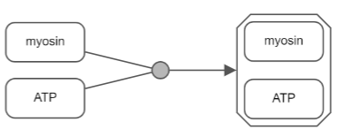

Tutorials
- Introduction
Newt basics video:

- Menubar and toolbar
- Right panel
- File operations
- Convenient editing
- Alignment, grid, and guidelines
- Semantic validation
- Complexity management
Complexity management video:
- Search and highlight
- Automatic layout
Automatic layout video:
- Querying Pathway Commons
- References
Introduction

Newt editor is composed of a menu bar and a toolbar laid out horizontally on top of the drawing canvas with pan-zoom controls in its upper left, and a right panel for object inspection, map configuration and the palette.

Newt is a viewer and editor of maps drawn in SBGN Process Description (PD) and Activity Flow (AF) languages or Simple Interaction Format (SIF). Please refer to related reference cards and specifications for details of SBGN languages.
Newt can be launched with a blank model, where a map can be created from scratch or an existing one can be uploaded for editing. Some samples are also available under the File menu. In addition, one can launch Newt with a remote SBGN model specified as a URL or as a Pathway Commons URI. Examples: launch with URL or URI.
Here is a short tutorial illustrating basics of Newt. Also refer to "Help | {Quick Help,Quick Tutorial,UI Guide}" for further help.
Menubar and toolbar
Menubar located at the top of the Newt editor is where all capabilities of the tool is assembled in an organized manner. Right below is a toolbar, which compiles most frequently used of all available operations for convenience.
Right panel
The panel on the right is composed of the following tabs.
Inspector and style editor

The object inspector on the right panel titled "Object" is activated when a particular object is selected by left-clicking on it, enabling inspection and editing of the style of the underlying object from border color to font type and size to state variables and custom annotations.
When multiple objects are selected, the inspector will only display the common attributes (and their values if all objects have the same value for that attribute) and will allow convenient simultaneous modification of those attributes.
A convenient way to change the style of an entire map is to use one of pre-defined color schmes under Map Properties in the right panel. 3D or gradient coloring of map objects are available through these colors schemes via background images as well as solid fill colors.
Map settings

The tab titled "Map" on the right panel is for configuring the drawing of the map. It can be enabled with "File | Map Properties..." or through the associated tool on the toolbar.
Numerous settings of a map from general properties like compound paddings to label related settings such as whether to fit labels to nodes, to color scheme can be set using this tab.
Name and description of the map can also be set using this panel.
Notice that some of these settings apply to all map types, whereas others only apply to specific map type.
Palette

When Palette tab on the right panel is chosen or when the user clicks in an empty area on the drawing canvas, the palette composed of nodes and edges of available map types: PD, AF and SIF, is displayed. The type of a map (see Type under General Properties) is considered PD (AF or SIF) when the user constructs a map using only nodes and edges from the PD (AF or SIF) palette. When the user mixes up nodes and/or edges from multiple palettes though, its type is set as "Unknown", and notation specific checks (e.g. a modulation arc can only go from a source EPN such as macromolecule to a process node in a PD map) are no longer performed.
Nodes can either be created by dragging from the palette onto the canvas or by selecting a particular node on the palette and then clicking on the canvas. Clicking on a node or an edge puts you in node/edge creation mode, and upon creation of the node/edge, Newt returns to selection mode. Clicking twice on a tool, on the other hand, puts you in sustained mode so that the user can create multiple objects of that type in a row.
A convenient way to reconnect an edge is by selecting the edge and grabbing it from its reconnection handles at both ends and dragging onto its new source / target.
File operations
Newt can read and write an extended version of SBGNML files with ".nwt" extension. Extension includes style of map objects (such as color, font, and optional background image), custom properties (e.g. Uniprot ID associated with a macromolecule), and hidden/collapsed map content; thus, such information is restored upon save-reload.
Import-export
If you'd like a version without such style and annotation information to perhaps exchange maps with other tools such as SBGN-ED, however, you could get your map in plain SBGNML using "Export | SBGN-ML Plain".
Newt supports import and export facilities from and to CellDesigner through "{Import,Export} | CellDesigner File".
In addition, AF models can be imported to Newt from simple tab-delimited files. An example model formatted in this manner follows:
SBGNViz AF 1.0
Sample Pathway title
This is a sample pathway description.
--NODE_NAME NODE_ID NODE_TYPE PARENT_ID POSX POSY WIDTH HEIGHT--
ERBB2 1 BIOLOGICAL_ACTIVITY -1
NRAS 2 BIOLOGICAL_ACTIVITY -1
...
--EDGE_ID SOURCE TARGET EDGE_TYPE--
11 1 2 NEGATIVE_INFLUENCE
...
Furthermore, maps may be imported from or exported to Simple Interaction Format (SIF) files using the "{Import,Export} | SIF" File menu items. A SIF file is formatted as follows:
entity_id relationship_type entity_id
...
where entity_id is the label and ID of a macromolecule or a simple chemical and relationship_type is one of the predetermined types of relationships between these two entities.
Static images
Finally, File menu can be used to export the current map as a static image (either as a raster file in PNG or JPG or as scalable vector graphics in SVG).
Persisting user preferences
Users might like to save their preferences (including Map, Layout, Grid, and Object properties) for later use using "File | Save Preferences..." in a file with ".newtp" extension. These preferences can later be loaded using "File | Load Preferences..." to be applied to any map.
Launch with a remote SBGN map
As noted above Newt may be launched by a remote file via a URL or by URI as a query to the Pathway Commons database. In such cases, the user might like to change some map properities on launch. Available properties (with default values) include:
compoundPadding=10,
extraCompartmentPadding=14,
extraComplexPadding=10,
arrowScale=1.25,
showComplexName=true,
dynamicLabelSize='regular',
inferNestingOnLoad=false,
fitLabelsToNodes=false,
fitLabelsToInfoboxes=false,
recalculateLayoutOnComplexityManagement=true,
rearrangeAfterExpandCollapse=true,
animateOnDrawingChanges=true,
adjustNodeLabelFontSizeAutomaticallyi=false,
enablePorts=true,
allowCompoundNodeResize=false,
mapColorScheme='black_white',
defaultInfoboxHeight=12,
defaultInfoboxWidth=8,
mapName="",
mapDescription="", and
enableSIFTopologyGrouping=false.
Convenient editing
Map content can be expanded using the Palette as described earlier. A convenient way to populate a map is using the templates under the Edit menu. However, note that if you create a reversible reaction, which requires using input ports of a process node for production edges, the map type will be set to "Unknown", and no validation checks for linking nodes will be performed for subsequent operations.

|
 |
|---|
{kind=link}
Alignment, grid and guidelines
Newt provides various mechanisms for alignment of map objects. One such facility is available through the View menu, where the user can select a number of objects and align their center or edge horizontally or vertically. Such alignment is performed with respect to the object selected first.
Another way to perform alignment is through the grid. When you enable the grid tool ( ) on the toolbar, a grid is displayed and nodes are snapped to grid as they are dragged.
) on the toolbar, a grid is displayed and nodes are snapped to grid as they are dragged.

Yet another way to perform alignment is by enabling the guidelines with the associated tool on the toolbar ( ). Two types of guidelines are enabled with this tool:
). Two types of guidelines are enabled with this tool:
- Geometric guidelines (e.g. center of two nodes are in alignment) and
- Distance guidelines (e.g. a process node is distanced equally from its source and target).
Semantic validation

SBGN PD maps may be validated using "Edit | Validate Map..." menu item. This will validate the map and show the user any semantic problems with the map in a newly created tab titled "Console" in the right panel. Whenever possible, Newt will suggest a fix for each particular problem, allowing the user to choose from potentially multiple ways to fix the problem in this new tab.
Complexity management
Some maps can be rather large. No matter how advanced of layout and viewing facilities are available, navigation through such maps and tracing interactions can be cumbersome. Newt provides some advanced complexity management techniques [2,1,3] so that the user can focus on a sub-map of interest at any time during their analysis, removing unwanted details temporarily from the map. Below we discuss these facilities.
Here is a short tutorial illustrating complexity management in Newt.
Hide-show
Unwanted details of a map may be hidden by the user temporarily through the View menu. Below is an example, where the user initially keeps a single process and hides all others (top). Then the user gradually reveals the hidden neighbors (bottom maps) using "Show Hidden Neighbors" in the node context menu.

|
|||
|---|---|---|---|

|

|

|
... |
Expand-collapse
Another way to manage complexity is by collapsing currently not-so-interesting parts of a map (i.e. a submap, a compartment or a complex). Collapsed compound node can later be expanded to reveal its nested content.
Below is an example, where, first, all complexes of a map have been collapsed to reduce complexity. Then, nucleus was collapsed to focus on the rest of the map.

|
|
|---|---|

|

|
Search and highlight
Newt allows users to highlight a specified part of a map through the Highlight menu (Highlight | Selected). To highlight the part of a map involving a certain object, you may use the Search facility (Highlight | Search). Newt looks for node labels with specified keyword and highlights them (all processes involved in case of map type being PD).

Automatic layout


Newt provides automatic layout services to lay out a map from scratch (disable Incremental flag under Layout | Layout Properties...) or incrementally (default). Newt uses a layout algorithm [5,4,6] respecting compound structures (e.g. compartments). Please refer to the related extension for options for configuring automatic layout.
The same algorithm is also applied incrementally after complexity management operations described earlier, if the associated flag (Map Properties... | Arrangement | Rearrange on Complexity Management) is enabled.
Here is a short tutorial illustrating automatic layout capabilities of Newt.
Querying Pathway Commons
Newt provides an interface to perform live queries to the Pathway Commons database, presenting results in SBGN, and enabling editing on them. Currently available type of queries include:
- Query Paths Between (find all paths of specified length limit between any two entities of the specified set),
- Query From To.. (find all paths of specified length limit from a set of source entities to a set of target entities),
- Common Stream (find molecules within the specified distance that are affecting or affected by a specific set of molecules in common),
- Neighborhood (find the neighbors of an entity within a certain distance), and
- Query by URI


For instance, Paths Between query takes a list of gene symbols (separated by blank spaces or on separate lines) and a length limit specifying the maximum length of paths between specified genes. Since there could be exponentially many paths between multiple genes, this length limit can be at most 3.
References
[1] M. Sari, I. Bahceci, U. Dogrusoz, S.O. Sumer, B.A. Aksoy, O. Babur, E. Demir, "SBGNViz: a tool for visualization and complexity management of SBGN process description maps", PLoS ONE, 2015.
[2] U. Dogrusoz and B. Genc, "A Multi-Graph Approach to Complexity Management in Interactive Graph Visualization", Computers & Graphics, 2006.
[3] U. Dogrusoz, A. Karacelik, I. Safarli, H. Balci, L. Dervishi, M.C. Siper, "Efficient methods and readily customizable libraries for managing complexity of large networks", PLoS ONE, 2018.
[4] B. Genc, U. Dogrusoz, "An Algorithm for Automated Layout of Process Description Maps Drawn in SBGN", Bioinformatics, 32(1), pp. 77-84, 2016.
[5] U. Dogrusoz, E. Giral, A. Cetintas, A. Civril, and E. Demir, "A Layout Algorithm For Undirected Compound Graphs", Information Sciences, 2009.
[6] U. Dogrusoz, E. Giral, A. Cetintas, A. Civril, and E. Demir, "A Compound Graph Layout Algorithm for Biological Pathways", LNCS, vol. 3383, pp. 442-447, 2004.
[7] U. Dogrusoz, A. Cetintas, E. Demir, and O. Babur, "Algorithms for Effective Querying of Compound Graph-Based Pathway Databases", BMC Bioinformatics, 10:376, 2009.